Using Built-in Java Classes

The goal of this hands-on lab is to get
you exposed to the basics of
using built-in classes such as String and Integer class in a Java
application. First, you will learn how to create an object
instance using "new" keyword. You will also learn the concept of static
and instance method. You will learn how primitives are being
passed as paramaters through pass-by-value model while reference
objects are passed as parameters through pass-by-reference model.
You will also exercise how variables are scoped.
Expected duration: 140 minutes


Change Log
- Jan. 27th, 2007: Created
- Feb. 20th, 2010: Updated and tested with NetBeans 6.8 (Sang Shin)
- July 13th, 2009: Updated and tested with NetBeans 6.9, Lab zip
file name is changed (Sang Shin)
Lab Exercises
Exercise 1: Create an object instance of a
class using "new" keyword
In this exercise, you will exercise the
concept object instance creation using "new"
keyword.
You will learn
how you are going to create your own classes and object instances
later.
Solution:
The solution to
this exercise is provided as a ready-to-open-and-run
NetBeans project as part of hands-on lab zip file. You can find it as <LAB_UNZIPPED_DIRECTORY>/javase_builtinclasses/samples/MyClassAndObjectProject.
You can just open it and run it.
(1.1)
Create String
object instances using "new" keyword
0. Start the NetBeans IDE if you have
not done so.
1. Create a NetBeans project
- Select File from
top-level menu and
select New Project.
- Observe that the New Project
dialog box appears.
- Select Java under Categories section and Java Application under Projects section.
- Click Next.
- Under Name
and Location pane, for the Project
Name field, enter MyClassAndObjectProject.
- For the Create Main Class
field, enter ClassAndObject.
(Figure-1.10 below)
- Click Finish.
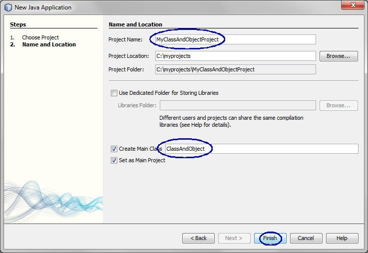
Figure-1.10: Create a new project
- Observe that the MyClassAndObjectProject
project node is created
under Projects pane of the
NetBeans IDE and IDE generated ClassAndObject.java
is displayed in the
editor window of the IDE.
2. Modify the IDE generated
ClassAndObject.java as
shown in Code-1.11. Study the code while paying special attention to
the bold-fonted comments.
public class ClassAndObject {
public static void main(String[] args) {
// Create an instance
of a class by using a Java language keyword "new".
// For example, in order to create an object instance of a String class,
// you will do the following
String strInstance1 = new String("I am object instance of a String
class");
System.out.println("value of strIntance1 = " + strInstance1);
// String class a special class
for which you can create an instance
// of it by assigning a string literal. No other class allows
this form of object creation.
String strInstance2 = "I am object instance of a String class";
System.out.println("value of strIntance2 = " + strInstance2);
}
}
|
Code-1.11: ClassAndObject.java
3. Build and run the program
- Right click MyClassAndObjectProject
and select Run.
- Observe the result in the Output
window of the NetBeans IDE.
(Figure-1.12 and Figure-1.13 below)
value of strIntance1 = I am
object instance of a String class
value of strIntance2 = I am object instance of a String class
|
Figure-1.12: Result of running the application
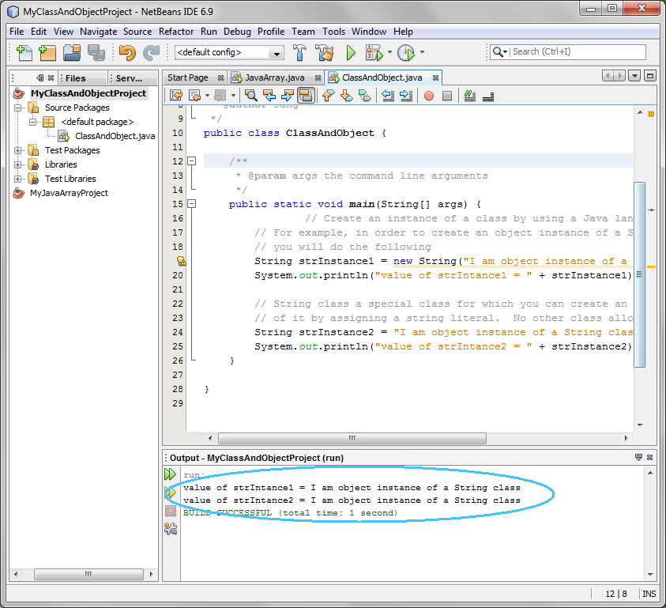
Figure-1.13: Result of running the application
4. (For your own exercise - this is not a homework) Modify
ClassAndObject.java
as following.
- Create another object instance of String class using new keyword. Initialize it
with the following value.
- "I am another object instance of String class"
- Display it using Sytem.out.println(..)
method.
5. Build and run the program
- Right click MyClassAndObjectProject
and select Run.
return to top of the exercise
(1.2)
Create Integer object instances using "new" keyword
1. Modify
ClassAndObject.java as shown
in Code-2.21 below. The code fragment that needs to be added is
highlighted in bold and blue-colored font.
public class ClassAndObject {
public static void main(String[] args) {
// Create an instance
of a class by using a Java language keyword "new".
// For example, in order to create an object instance of a String class,
// you will do the following
String strInstance1 = new String("I am object instance of a String
class");
System.out.println("value of strIntance1 = " + strInstance1);
// String class a special class
for which you can create an instance
// of it by assigning a string literal. No other class allows
this form of object creation.
String strInstance2 = "I am object instance of a String class";
System.out.println("value of strIntance2 = " + strInstance2);
// Create an
object instance of
Integer class
Integer intInstance1 = new Integer(20);
System.out.println("value of intInstance1 = " + intInstance1);
// Create another
object instance of
Integer class
Integer intInstance2 = new Integer(30);
System.out.println("value of intInstance2 = " + intInstance2);
}
} |
Code-2.21: Create an object instance of an Integer class
2. Build and run the program
- Right click MyClassAndObjectProject
and select Run.
- Observe the result in the Output
window of the NetBeans IDE.
(Figure-2.12 below)
value of strIntance1 = I am
object instance of a String class
value of strIntance2 = I am object instance of a String class
value of intInstance1 = 20
value of intInstance2 = 30
|
Figure-2.22: Result
3. (For your own exercise - this is not a homework) Modify
ClassAndObject.java
as following.
- Create another object instance of Long class using new keyword.
- Display it using Sytem.out.println(..)
method.
4. Build and run the program
- Right click MyClassAndObjectProject
and select Run.
return to top of
the exercise
Summary
In this exercise, you have learned how to
create an object instance of built-in classes such as String and
Integer by using new
keyword.
Return
to the top
Exercise 2: Static method and instance
(non-static)
methods
In this exercise, you will learn how to
invoke static and
non-static (instance)
methods of a class. Please note that a static method of a class
is called in the following form:
| <Name of the
class>.<Name of the static method> |
An example is
Integer.parseInt("25"); //
parseInt() is a static method of the Integer class
|
A non-static (instance) method of class is called only through an
object
instance in the following form:
| <Name of object instance of a
class>.<name of the
non-static method> |
An example is
String str1 = new
String("Hello"); // Create an object instance of String class
char x = str1.charAt(0); // Call an instance method charAt() of
String class through the object instance
|
- Use static and non-static (instance) methods
(2.1)
Use static and non-static (instance) methods
1. Create a NetBeans project
- Select File from
top-level menu and
select New Project.
- Observe that the New Project
dialog box appears.
- Select Java under Categories section and Java Application under Projects section.
- Click Next.
- Under Name
and Location pane, for the Project
Name field, enter MyStaticAndInstanceMethodsProject.
- For the Create Main Class
field, enter StaticAndInstanceMethods.
- Click Finish.
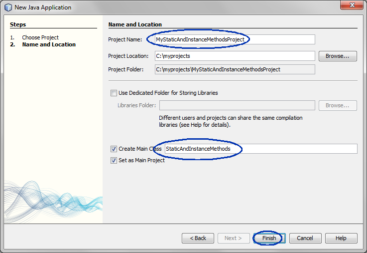
- Observe that the MyStaticAndInstanceMethodsProject
project node is created
under Projects pane of the
NetBeans IDE and IDE generated StaticAndInstanceMethods.java
is displayed in the
editor window of the IDE.
2. Modify the IDE generated
StaticAndInstanceMethods.java as
shown in Code-2.11. Study the code by special attention to the
bold-fonted comments.
public class
StaticAndInstanceMethods {
public static void main(String[] args) {
//
Create two instances of String class
String strInstance1 = new String("I am object instance of a String
class");
String strInstance2 = "Live your passion!";
// Invoke an instance method charAt()
through an object instance of String class
char x = strInstance1.charAt(2);
char y = strInstance2.charAt(1);
char z = strInstance2.charAt(0);
System.out.println("The 3rd char of strInstance1 = " + x);
System.out.println("The 2nd char of strInstance2 = " + y);
System.out.println("The 1st char of strInstance2 = " + z);
// Invoke an instance method
equalsIgnoreCase(..) method
boolean b = strInstance1.equalsIgnoreCase(strInstance2);
String strInstance3 = b? "Yes":"No";
System.out.println("Do strInstance1 and strInstance2 have same string
ignoring case? " + strInstance3);
// Invoke a static-method, valueOf (int
i), of the String class
int i = 23;
String strInstance4 = String.valueOf(i);
System.out.println("value of strInstance4 = " + strInstance4);
// You already have used parseInt()
static method of the Integer class in
// previous exercises.
String strInstance5 = new String("34"); // Create an object instance of
String class
int ii = Integer.parseInt(strInstance5);
System.out.println("value of ii = " + ii);
}
}
|
Code-2.11: StaticAndInstanceMethods.java
3. Build and run the program
- Right click MyStaticAndInstanceMethodsProject
and select Run.
- Observe the result in the Output
window of the NetBeans IDE.
(Figure-2.12 below)
The 3rd char of strInstance1 = a
The 2nd char of strInstance2 = i
The 1st char of strInstance2 = L
Do strInstance1 and strInstance2 have same string ignoring case?
No
value of strInstance4 = 23
value of ii = 34
|
Figure-2.12: Result of running the application
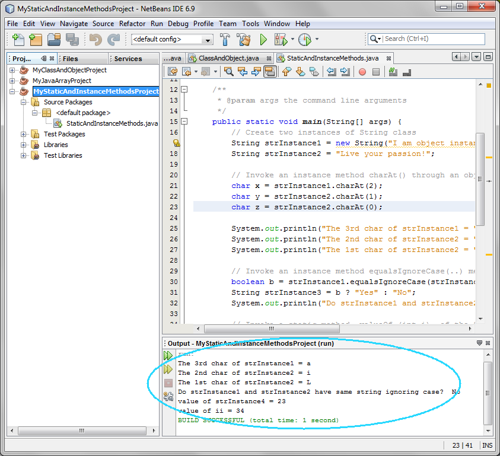
4. Modify
StaticAndInstanceMethods.java
as shown in Code-2.13. The code fragments that need to be added
are highlighted in
bold and
blue-colored font. The new code added is
expected to generate a compile error.
public class
StaticAndInstanceMethods {
public static void main(String[] args) {
// Create two instances of
String class
String strInstance1 = new
String("I am object instance of a String class");
String strInstance2 = "Live
your passion!";
// Invoke an instance method
charAt() through an object instance of String class
char x =
strInstance1.charAt(2);
char y =
strInstance2.charAt(1);
char z =
strInstance2.charAt(0);
System.out.println("The 3rd
char of strInstance1 = " + x);
System.out.println("The 2nd
char of strInstance2 = " + y);
System.out.println("The 1st
char of strInstance2 = " + z);
// Invoke an instance method
equalsIgnoreCase(..) method
boolean b =
strInstance1.equalsIgnoreCase(strInstance2);
String strInstance3 = b?
"Yes":"No";
System.out.println("Do
strInstance1 and strInstance2 have same string ignoring case? " +
strInstance3);
// Invoke a static-method,
valueOf (int i), of the String class
int i = 23;
String strInstance4 =
String.valueOf(i);
System.out.println("value of
strInstance4 = " + strInstance4);
// You already have used
parseInt() static method of the Integer class in
// previous exercises.
String strInstance5 = new
String("34"); // Create an object instance of String class
int ii =
Integer.parseInt(strInstance5);
System.out.println("value of
ii = " + ii);
// The following code will generate
a compile error since you are trying to
// invoke a instance method through a class. Fix this
compile error.
char f = String.charAt(2);
}
}
|
Code-2.13: Code that generates compile error.
5. Observe that the NetBeans shows the syntax error as shown in
Figure-2.14 below. Take note
"non-static
method charAt(int)
cannot be referenced from a static context" hint message.
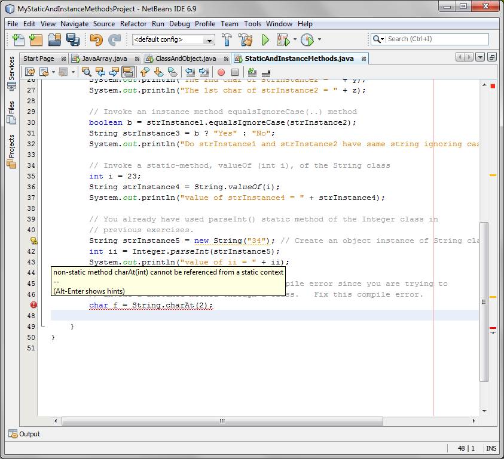
Figure-2.14: Compile error is detected.
6. Take a look at the Javadoc of the charAt() method of the String
class to verify that charAt() method is indeed a non-static (instance)
method.
- Move your cursor over the charAt()
method and right click it and select Show
Javadoc. (Figure-2.15 below)
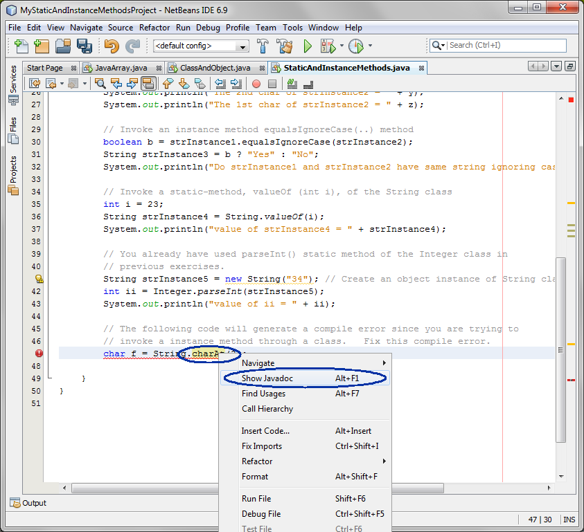
Figure-2.15: Display JavaDoc of the String
- Observe that the Javadoc of the charAt()
method of the String class
gets displayed in the default browser. (Figure-2.16
below)
- Verify that it is not a static method. (If it were, it
should have a static modifier.)
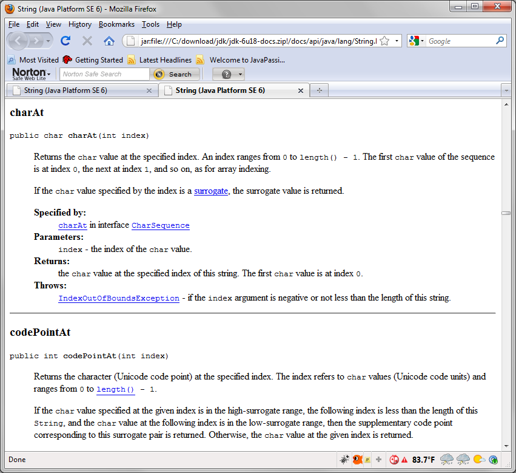
Figure-2.16: Javadoc of the charAt() method.
7. (For your own exercise) Identify which
bold-fonted methods of the Code-2.17 below are static methods and which
ones are
non-static methods.
// endsWith() method
String str =
"Hello";
System.out.println( str.endsWith(
"slo" ) );
// forDIgit() method
System.out.println(
Character.forDigit(13, 16) );
// floor() method
System.out.println(
Math.floor(3.14));
// isDigit() method
System.out.println( "0=" +
Character.isDigit('0'));
System.out.println( "A="
+Character.isDigit('A'));
|
Code-2.17: Identify which methods are static methods and which methods
are non-static methods
Solution:
The solution to
this exercise is provided as a ready-to-open-and-run
NetBeans project as part of hands-on lab zip file. You can find it as
<LAB_UNZIPPED_DIRECTORY>/javase_builtinclasses/samples/MyStaticAndInstanceMethodsProject.
You can just open it and run it.
return to top of
the exercise
Summary
In this exercise, you have built
and run a Java application using NetBeans IDE.
return to the top
Exercise 3: Pass by value & Pass by
reference parameter passing
In this exercise, you will exercise the
concept of pass by value.
Please note that primitive type parameters are passed by value while
reference type parameters are passed by reference. An array
is
considered a reference type even though the entries it contains are
primitive type.
- Parameter passing via Pass by value
- Parameter passing via Pass by reference
(3.1)
Parameter passing via Pass by value
1. Create a NetBeans project
- Select File from
top-level menu and
select New Project.
- Observe that the New Project
dialog box appears.
- Select Java under Categories section and Java Application under Projects section.
- Click Next.
- Under Name
and Location pane, for the Project
Name field, enter MyTestPassByValueProject.
- For the Create Main Class
field, enter TestPassByValue.
- Click Finish.
- Observe that the MyTestPassByValueProject
project node is created
under Projects pane of the
NetBeans IDE and IDE generated TestPassByValue.java
is displayed in the editor window of the IDE.
2. Modify the IDE generated TestPassByValue.java.
- Modify the TestPassByValue.java
as
shown in Code-3.11 below.
- Study the code by special attention to the bold-fonted code.
public class TestPassByValue {
public static void main(String[] args) {
int i = 10;
// Print the value of i
System.out.println("start of
the main method and i = " + i);
// Call method test, which is defined below
// and pass int value as a parameter. Since
// int is a primitive type, this parameter is passed
// by value.
test( i );
// print the value of i. please note
that i not changed
System.out.println("end of
the main method and i = " + i);
}
// Another static
method in the TestPassByValue class
public static void test(int j){
System.out.println("start of
the test method and j = " + j);
// change value of parameter i
j = 33;
System.out.println("end of
the test method and j = " + j);
}
}
|
Code-3.11: Modified TestPassByValue.java
3. Build and run the program
- Right click MyTestPassByValueProject
and select Run.
- Observe the result in the Output window of the NetBeans IDE.
(Figure-3.12 below)
start of the main method and i =
10
start of the test method and j = 10
end of the test method and j = 33
end of the main method and i = 10
|
Figure-3.12: Result of running TestPassByValue program
Solution:
The solution to this exercise is provided as
ready-to-open-and-run
NetBeans project as part of hands-on lab zip file. You can find it
<LAB_UNZIPPED_DIRECTORY>/javase_builtinclasses/samples/MyTestPassByValueProject
.
You can just open and run it.
4. (For your own exercise) Modify
TestPassByValue.java
as following. Build and run the project.
- Pass the second primitive type parameter to the test(..) method -
you can choose any primitive type parameter (such as long or boolean).
- Set the value of the second parameter before calling the test(..)
method. And change the value of the passed parameter within the
test(..) method as you did with the first parameter in Code-3.11 above.
- Modify the System.out.println(..) methods in the Code-3.11 above
to display the values of both the first parameter and second parameter.
(3.2)
Parameter passing via Pass by reference
1. Create a NetBeans project
- Select File from
top-level menu and
select New Project.
- Observe that the New Project
dialog box appears.
- Select Java under Categories section and Java Application under Projects section.
- Click Next.
- Under Name
and Location pane, for the Project
Name field, enter MyTestPassByReferenceProject.
- For the Create Main Class
field, enter TestPassByReference.
(Figure-3.15 below)
- Click Finish.
- Observe that the MyTestPassByReferenceProject
project node is created
under Projects pane of the
NetBeans IDE and IDE generated TestPassByReference.java
is displayed in the editor window of the IDE.
2. Modify the IDE generated TestPassByReference.java
as
shown in Code-3.16 below. Study the code by special attention to the
bold-fonted comments.
public class TestPassByReference
{
public static void main(String[] args) {
System.out.println("main:
start");
// Create an array of integers and
initialize
// the array with 10, 11, and 12.
int [] ages = {10, 11, 12};
// Print array values. The array
should display
// 10, 11, 12
for (int i=0;
i<ages.length; i++ ){
System.out.println(ages[i]);
}
System.out.println("main:
before calling the test method");
// Call test and pass references to array.
// Since the array is a reference type, what is
// being passed is a pointer to actual array.
test(ages);
System.out.println("main:
after calling the test method");
// Print array values again. It now
should contain changed values.
// display the changed values.
for (int i=0;
i<ages.length; i++ ){
System.out.println(ages[i]);
}
System.out.println("main:
end");
}
// Another static
method in the TestPassByReference class
public static void test(int[] arr){
System.out.println("test:
start");
// change values of array
for (int i=0;
i<arr.length; i++ ){
arr[i] = i + 50;
}
System.out.println("test:
end");
}
}
|
Code-3.16: Modified TestPassByReference.java
3. Build and run the program
- Right click MyTestPassByReferenceProject
and select Run.
- Observe the result in the Output window of the NetBeans IDE.
(Figure-3.17 below)
main: start
10
11
12
main: before calling the test method
test: start
test: end
main: after calling the test method
50
51
52
main: end
|
Figure-3.17: Result of running MyTestPassByReferenceProject
Solution:
The solution to this exercise is provided as
ready-to-open-and-run
NetBeans project as part of hands-on lab zip file. You can find it
<LAB_UNZIPPED_DIRECTORY>/javase_builtinclasses/samples/MyTestPassByRefereneceProject.
You can just open it and run it.
return to top of
the exercise
Exercise 4: Scope of Variables
In this exercise, you will exercise the
concept scope variable. You will also learn how to declare three
types of variables, static variable, instance variable, and local
variable.
- Build and run a Java program that excercises a
scope of a variable
- Write a Java program that uses all three types of
variables
(4.1)
Build and run a Java program that exercises a scope of a variable
1. Create a NetBeans project
- Select File from
top-level menu and
select New Project.
- Observe that the New Project
dialog box appears.
- Select Java under Categories section and Java Application under Projects section.
- Click Next.
- Under Name
and Location pane, for the Project
Name field, enter MyScopeOfVariableProject.
- For the Create Main Class
field, enter ScopeOfVariable.
- Click Finish.
- Observe that the MyScopeOfVariableProject
project node is created
under Projects pane of the
NetBeans IDE and IDE generated ScopeOfVariable.java
is displayed in the editor window of the IDE.
2. Modify the IDE generated ScopeOfVariable.java
as
shown in Code-4.11 below. Study the code by special attention to the
bold-fonted comments.
public class ScopeOfVariable {
public static void main(String[] args) {
int var1 = 10;
if (var1 < 100){
int
var2 = 20;
} else {
int
var2 = 21;
}
// Access to var1 is allowed so no compile
error.
System.out.println("value of
var1 = " + var1);
// Access to var2 is not allowed so
compile error will be generated
System.out.println("value of
var2 = " + var2);
}
}
|
Code-4.11: Modified ScopeOfVariable.java
3. Observe that there is a compile error. (Figure-4.12 below)
This is expected because you are accessing the
var2 variable scope is only within
the closest { } and cannot
be used outside of that scope.
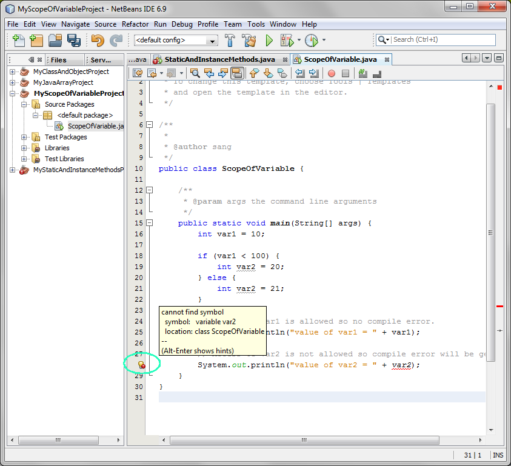
Figure-4.12: Observe scope problem
4. Modify the
ScopeOfVariable.java
as
shown in Code-5.13 below. The code fragments that need to be
removed (commented out here) are highlighted in bold and red-colored
font while the code fragments that need to be added are highlighted in
bold and red-colored font.
public class ScopeOfVariable {
public static void main(String[] args) {
int var1 = 10;
// var2 is now
defined in an outer scope
int var2 = 15;
if (var1 < 100){
//int var2 = 20;
var2 = 20;
} else {
//int var2 = 21;
var2 = 21;
}
// Access to var1 is allowed
so no compile error.
System.out.println("value of
var1 = " + var1);
// Access to var2 is now
allowed
System.out.println("value of
var2 = " + var2);
}
}
|
Code-4.13: Modified ScopeOfVariable.java with correct scoping
5. Build and run the program
- Right click MyScopeOfVariableProject
and select Run.
- Observe the result in the Output window of the NetBeans IDE.
(Figure-5.14 below)
value of var1 = 10
value of var2 = 20
|
Figure-4.14: Result of running MyScopeOfVariableProject
Solution:
The solution to this exercise is provided as
ready-to-open-and-run
NetBeans project as part of hands-on lab zip file. You can find it as
<LAB_UNZIPPED_DIRECTORY>/javase_builtinclasses/samples/MyScopeOfVaraibleProject.
You can just open it and run it.
return to top of
the exercise
(4.2)
Write a Java program that declares three types of variables
In this step, you are going to declare
the three types of variables, static variable, instance variable, and
local variable. (I acknowlege that this is not probably the best
example to show how these variables are used. We will try
different exercise when we learn how to create your own class and the
concept of a package.)
1. Create a NetBeans project
- Select File from
top-level menu and
select New Project.
- Observe that the New Project
dialog box appears.
- Select Java under Categories section and Java Application under Projects section.
- Click Next.
- Under Name
and Location pane, for the Project
Name field, enter MyThreeVariablesTypesProject.
- For the Create Main Class
field, enter ThreeVariablesTypes.
- Click Finish.
- Observe that the MyThreeVariablesTypesProject project node is created
under Projects pane of the
NetBeans IDE and IDE generated ThreeVariablesTypes.java
is displayed in the editor window of the IDE.
2. Modify the IDE generated
ThreeVariablesTypes.java
as
shown in Code-4.21 below. Study the code by special attention to the
bold-fonted comments.
public class ThreeVariablesTypes
{
// Example of
static variable
static String myStaticVariable =
"static variable";
// Example of
instance variable
String
myInstanceVariable = "instance variable";
/**
* @param args the command line arguments
*/
public static void main(String[] args) {
String myLocalVariable =
"local variable";
System.out.println("myStaticVariable = " + myStaticVariable);
System.out.println("myInstanceVariable = " + myInstanceVariable);
System.out.println("myLocalVariable = " + myLocalVariable);
}
}
|
Code-4.20: ThreeVariablesTypes.java
3. Observe that instance variable cannot be referenced from a static
context - the main() method is a static method. (Figure-4.21
below)
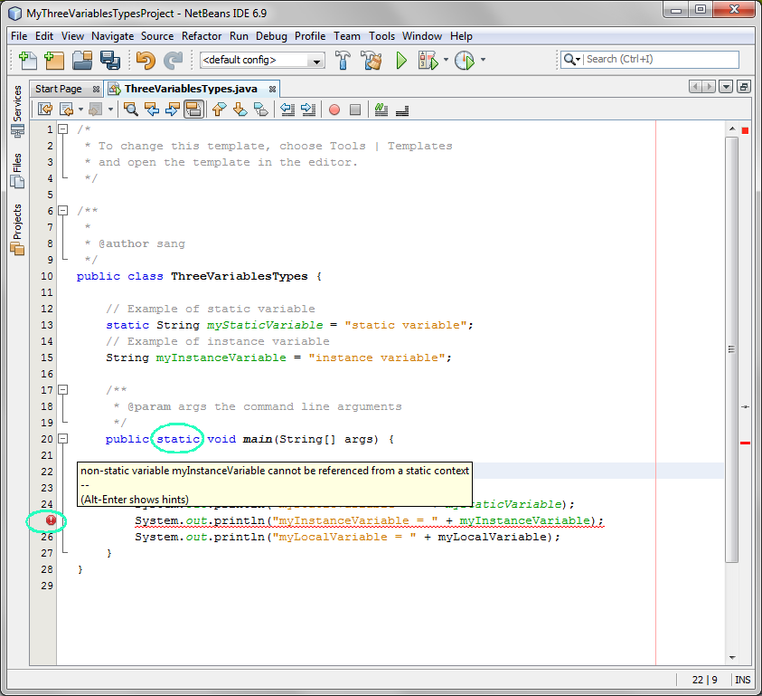
Figure-4.21: Three types of variables
4. Comment out the offending line and build and run the project.
Solution:
The solution to this exercise is provided as
ready-to-open-and-run
NetBeans project as part of hands-on lab zip file. You can find it
as
<LAB_UNZIPPED_DIRECTORY>/javase_builtinclasses/samples/MyThreeVaraibleTypesProject.
You can just open it and run it.
return to top of
the exercise
Exercise 5: Type casting of primitive
types and Wrapper
In this exercise, you will exercise
casting of primitive types and how to convert primitives to
corresponding Wrapper classes and vice versa. Typeing of reference
types will be exercises in other hands-on lab.
- Casting primitive types
- Converting primitives to Wrapper class objects and
vice-versa
(5.1)
Casting primitive types
1. Create a NetBeans project
- Select File from
top-level menu and
select New Project.
- Observe that the New Project
dialog box appears.
- Select Java under Categories section and Java Application under Projects section.
- Click Next.
- Under Name
and Location pane, for the Project
Name field, enter MyCastingPrimitivesProject.
- For the Create Main Class
field, enter CastingPrimitives.
- Click Finish.
- Observe that the MyCastingPrimitivesProject project node is created
under Projects pane of the
NetBeans IDE and IDE generated CastingPrimitives.java
is displayed in the editor window of the IDE.
2. Modify the IDE generated CastingPrimitives.java
as
shown in Code-5.11 below. Study the code by special attention to the
bold-fonted comments.
public class CastingPrimitives {
public static void main(String[] args) {
// Implicit casting example 1
int
numInt = 10;
double numDouble =
numInt;
System.out.println("int " +
numInt + " is implicitly casted to double " + numDouble);
// Implicit casting example 2
int
numInt1 = 3;
int
numInt2 = 2;
double numDouble2 =
numInt1/numInt2;
System.out.println("numInt1/numInt2 " + numInt1/numInt2 + " is
implicitly casted to double " + numDouble2);
// Explicit casting example 1
double valDouble =
10.12;
int
valInt = (int)valDouble;
System.out.println("double "
+ valDouble + " is explicitly casted to int " + valInt);
// Explicit casting example 2
double x = 10.2;
int y = 2;
int result = (int)(x/y);
System.out.println("x/y " +
x/y + " is explicitly casted to int " + result);
}
}
|
Code-5.11: Modified
CastingPrimitives.java
3. Build and run the program
- Right click MyCastingPrimitivesProject
and select Run.
- Observe the result in the Output window of the NetBeans IDE.
(Figure-5.12 below)
int 10 is implicitly casted to
double 10.0
numInt1/numInt2 0 is implicitly casted to double 0.0
double 10.12 is explicitly casted to int 10
x/y 5.1 is explicitly casted to int 5
|
Figure-5.12: Result of running My
CastingPrimitivesProject
Solution:
The solution to this exercise is provided as
ready-to-open-and-run
NetBeans project as part of hands-on lab zip file. You can find it as
<LAB_UNZIPPED_DIRECTORY>/javase_builtinclasses/samples/MyCastingPrimitivesProject.
You can just open it and run it.
4. (For your own exercise): Remove the explicit casting when you
convert the type from double to int and observe the compile error.
return to top of
the exercise
(5.2)
Converting primitives to Wrapper class objects and vice-versa
1. Open a NetBeans project
- Select File from
top-level menu and
select New Project.
- Observe that the New Project
dialog box appears.
- Select Java under Categories section and Java Application under Projects section.
- Click Next.
- Under Name
and Location pane, for the Project
Name field, enter MyConvertingPrimitivesToWrappersProject.
- For the Create Main Class
field, enter ConvertingPrimitivesToWrappers.
- Click Finish.
- Observe that the MyConvertingPrimitivesToWrappersProject project node is created
under Projects pane of the
NetBeans IDE and IDE generated ConvertingPrimitivesToWrappers.java
is displayed in the editor window of the IDE.
2. Modify the IDE generated ConvertingPrimitivesToWrappers.java
as
shown in Code-5.21 below. Study the code by special attention to the
bold-fonted comments.
public class
ConvertingPrimitivesToWrappers {
public static void main(String[] args) {
// Create Integer object instance
Integer dataCount = new
Integer(7801);
// Convert Integer type into int primitive
type using
intValue() method
int newCount =
dataCount.intValue();
System.out.println("int
newCount = " + newCount);
// Using static method of the Integer
wrapper class
// to convert a String type to int primitive type
String pennsylvania =
"65000";
int penn =
Integer.parseInt(pennsylvania);
System.out.println("int penn
= " + penn);
// Convert int primitive type into Integer type
Integer myInteger = new
Integer(penn);
System.out.println("Integer
myInteger = " + myInteger);
}
}
|
Code-5.21: Modified
ConvertingPrimitivesToWrappers.java
3. Build and run the program
- Right click MyConvertingPrimitivesToWrappersProject
and select Run.
- Observe the result in the Output window of the NetBeans IDE.
(Figure-6.22 below)
int newCount = 7801
int penn = 65000
Integer myInteger = 65000
|
Figure-5.22: Result of running My
ConvertingPrimitivesToWrappersProject
Solution:
The solution to this exercise is provided as
ready-to-open-and-run
NetBeans project as part of hands-on lab zip file. You can find it
as
<LAB_UNZIPPED_DIRECTORY>/javase_builtinclasses/samples/MyConvertingPrimitivesToWrappersProject.
You can just open it and run it.
4. (For your own exercise) Modify
ConvertingPrimitivesToWrappers.java
as following. Build and run the project.
- Create a Long type variable and convert it into long primitive
and display it
return to top of
the exercise
Exercise 6: Comparing objects
In this exercise, you will exercise the
concept of comparing objects (object instances) using String class as
an example.
- Build and run a Java program that
compares objects
(6.1)
Build and run a Java program that compares objects
1. Create a NetBeans project
- Select File from
top-level menu and
select New Project.
- Observe that the New Project
dialog box appears.
- Select Java under Categories section and Java Application under Projects section.
- Click Next.
- Under Name
and Location pane, for the Project
Name field, enter MyEqualsTestStringProject.
- For the Create Main Class
field, enter EqualsTestString.
- Click Finish.
- Observe that the MyEqualsTestStringProject
project node is created
under Projects pane of the
NetBeans IDE and IDE generated EqualsTestString.java
is displayed in the editor window of the IDE.
2. Modify the IDE generated EqualsTestString.java
as
shown in Code-6.11 below. Study the code by special attention to the
bold-fonted comments.
public class EqualsTestString {
/**
* @param args the command line arguments
*/
public static void main(String[] args) {
// Declare two String type variables, str1
and str2
String str1, str2;
// Initialize the variables. Note
that the variables contain
// pointers to the actual object instances.
str1 = "Life is worth
living... with Passion!";
str2 = str1;
// Display the values of the str1 and str2
variables
System.out.println("String1:
" + str1);
System.out.println("String2:
" + str2);
// The "==" notation, when it is used with
variables of reference types not
// primitive types, means whether the variables point to the same object
// instance or not.
// Check if str1 and str2 are the same object meaning if the two
variables
// points to the same String type object instance.
System.out.println("Same
object? " + (str1 == str2));
// Reinitialize str2 variable. It is
now pointing to a new String type object instance.
str2 = new String(str1);
// Display the values of the str1 and str2
variables
System.out.println("String1:
" + str1);
System.out.println("String2:
" + str2);
// Check if str1 and str2 are the same
object meaning if the two variables
// points to the same String type object instance.
System.out.println("Same
object? " + (str1 == str2));
// Check if str1 and str2 have the same
vaule
System.out.println("Same
value? " + str1.equals(str2));
}
}
|
Code-6.11: Modified EqualsTestString.java
3. Build and run the program
- Right click MyEqualsTestStringProject
and select Run.
- Observe the result in the Output window of the NetBeans IDE.
(Figure-6.12 below)
String1: Life is worth living...
with Passion!
String2: Life is worth living... with Passion!
Same object? true
String1: Life is worth living... with Passion!
String2: Life is worth living... with Passion!
Same object? false
Same value? true
|
Figure-6.12: Result of running MyEqualsTestStringProject
Solution:
The solution to
this exercise is provided as a ready-to-open-and-run
NetBeans project as part of hands-on lab zip file. You can find it as
<LAB_UNZIPPED_DIRECTORY>/javase_builtinclasses/samples/MyEqualsTestStringProject.
You can just open it and run it.
4. (For your own exercise) Write
EqualsTestInteger.java
as following.
- Compare object instances of Integer
class using the similar testing code as in
EqualsTestString.java above
- Build and run the project.
return to top of
the exercise
Exercise 7: getClass() method &
instanceOf operator
In this exercise, you will use getClass()
method of the Object class to find out the class of the an object
instance. You will also learn how to use instanceOf operator to
find out if a particular object instance is a particular class type.
- Use getClass() method
- Use instanceof operator
(7.1)
Build and run a Java program that compares objects
1. Create a NetBeans project
- Select File from
top-level menu and
select New Project.
- Observe that the New Project
dialog box appears.
- Select Java under Categories section and Java Application under Projects section.
- Click Next.
- Under Name
and Location pane, for the Project
Name field, enter MyGetClassMethodProject.
- For the Create Main Class
field, enter GetClassMethod.
- Click Finish.
- Observe that the MyGetClassMethodProject
project node is created
under Projects pane of the
NetBeans IDE and IDE generated GetClassMethod.java
is displayed in the editor window of the IDE.
2. Modify the IDE generated GetClassMethod.java
as
shown in Code-7.11 below. Study the code by special attention to the
bold-fonted comments.
public class GetClassMethod {
public static void main(String[] args) {
// Create String object instance
String str1 = "Life is worth
living... with Passion!";
// Find out the class information of String
object instance
// via getClass()
method. Note that it returns Class object instance.
Class str1Class
= str1.getClass();
System.out.println("Class of
str1 object instance is " + str1Class);
// the String name of the Class object
instance.
String str1ClassName =
str1Class.getName();
System.out.println("Class of
str1 object instance is " + str1Class);
// Create Integer object instance
Integer int1 = new
Integer(34);
// Find
out the class information of Integer object instance
// via getClass()
method. Note that it returns Class object instance.
Class int1Class =
int1.getClass();
System.out.println("Class of
int1 object instance is " + int1Class);
// the String name of the Class object instance.
String int1ClassName =
int1Class.getName();
System.out.println("Class of
int1 object instance is " + int1Class);
}
}
|
Code-7.11: Modified GetClassMethod.java
3. Build and run the program
- Right click MyGetClassMethodProject
and select Run.
- Observe the result in the Output window of the NetBeans IDE.
(Figure-7.12 below)
Class of str1 object instance is
class java.lang.String
Class of str1 object instance is class java.lang.String
Class of int1 object instance is class java.lang.Integer
Class of int1 object instance is class java.lang.Integer
|
Figure-7.12: Result of running MyGetClassMethodProject
4. (For your own exercise) Modify
GetClassMethod.java
as following. Build and run the project.
- Create an object instance of java.util.Date
class and display the class information of it.
return to top of
the exercise
(7.2)
Use "instanceof" operator
1. Create a NetBeans project
- Select File from
top-level menu and
select New Project.
- Observe that the New Project
dialog box appears.
- Select Java under Categories section and Java Application under Projects section.
- Click Next.
- Under Name
and Location pane, for the Project
Name field, enter MyinstanceofOperatorProject.
- For the Create Main Class
field, enter instanceofOperator.
- Click Finish.
- Observe that the MyinstanceofOperatorProject project node is created
under Projects pane of the
NetBeans IDE and IDE generated instanceofOperator.java
is displayed in the editor window of the IDE.
2. Modify the IDE generated instanceofOperator.java
as
shown in Code-7.21 below. Study the code by special attention to the
bold-fonted comments.
public class instanceofOperator {
public static void main(String[] args) {
// Create String object
instance
String str1 = "Life is worth
living... with Passion!";
Integer int1 = new
Integer(40);
// Check if str1 is String
type using instanceof operator.
// Check also if it is
Object type.
boolean b1 = str1 instanceof
String;
System.out.println("str1 is
String type: " + b1);
boolean b2 = str1 instanceof
Object;
System.out.println("str1 is
Object type: " + b2);
// Check if int1 is Integer
type using instanceof operator.
// Check also if it is
Object type.
b1 = int1 instanceof Integer;
System.out.println("int1 is
Integer type: " + b1);
b2 = int1 instanceof Object;
System.out.println("int1 is
Object type: " + b2);
b2 = int1 instanceof Number;
System.out.println("int1 is
Number type: " + b2);
}
}
|
Code-7.21: instanceofOperator.java
3. Take a look the Javadoc of the Integer class.
- Move your cursor on the Integer (in the editor window of the
NetBeans) and select Show Javadoc.
(Figure-7.22 below)
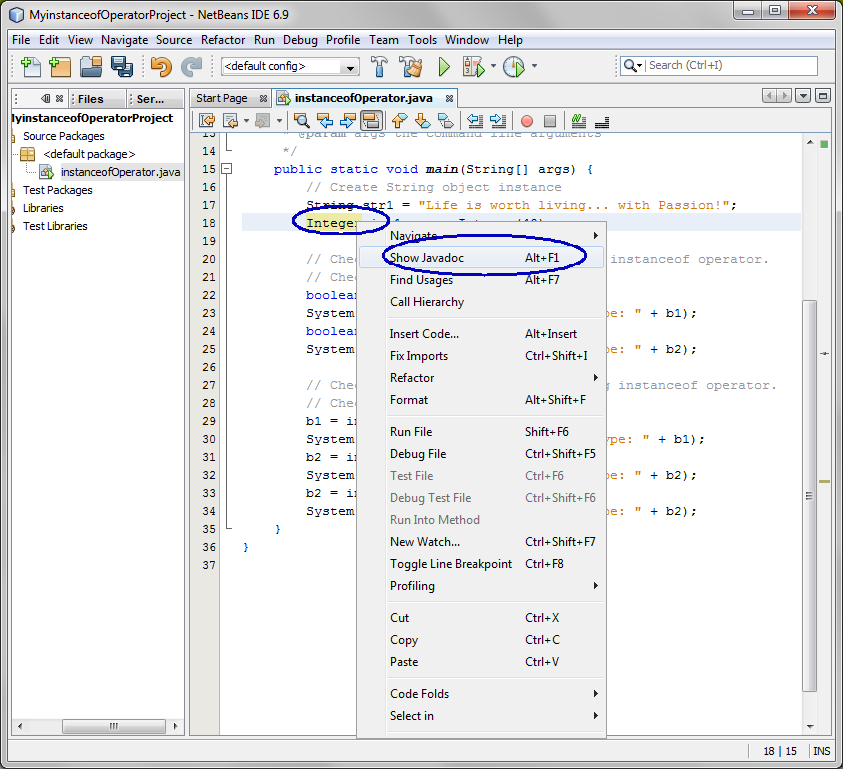
Figure-7.22: Show Javadoc of the Integer class
- Observe that Integer class has parent class called java.lang.Number, which in turn has
a parent class called java.lang.Object.
(Figure-7.23 below) This is why the testing of int1 instanceof Number returns true.
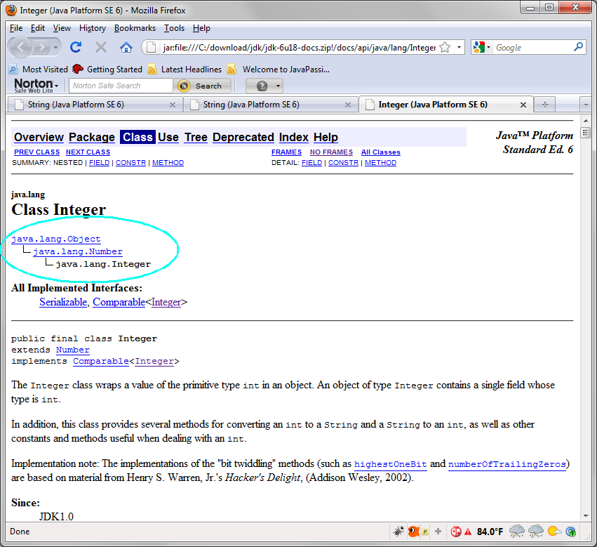
Figure-7.23: Javadoc of Integer class
3. Build and run the program
- Right click MyinstanceofOperatorProject
and select Run.
- Observe the result in the Output window of the NetBeans IDE.
(Figure-7.24 below)
str1 is String type: true
str1 is Object type: true
int1 is Integer type: true
int1 is Object type: true
int1 is Number type: true
|
Figure-7.24: Result of running MyinstanceofOperatorProject
4. (For your own exercise) Add code to
instanceOperator.java
as following. Build and run the project.
- Create an object instance of Long class and display the boolean
result of whether it is a type of Number, Object, and Long class itself.
return to top of
the exercise
Homework
exercise
1. The homework is to create a new
NetBeans project called "MyOwnBuiltinClassesProject"
as following:
- Receive
the first names of your family members (between 3 to 6 members of your
family) as command line arguments and create an array of String.
- Write a static method called generateNewName()
as following:
- It receives the array of String as a parameter.
- It creates a new first name by taking the 2nd character of each
String from the array
- Display the names that were enetered and newly generated name
- Zip file of the
MyOwnBuiltinClassesProject
NetBeans project. (Someone else
should be able to open and run it as a NetBeans project.) You can
use your favorite zip utility or you can use "jar" utility that comes
with JDK as following.
- cd <parent directory that contains MyOwnBuiltinClassesProject
directory>
(assuming you named your project as MyOwnBuiltinClassesProject)
- jar cvf MyOwnBuiltinClassesProject.zip
MyOwnBuiltinClassesProject
(MyOwnBuiltinClassesProject should
contain nbproject directory)
- Captured output screen -
name it as javase_builtinclasses.gif
or javase_builtinclasses.jpg (or
javase_builtinclasses.<whatever
graphics format>)
- Any screen capture that shows that your program is working is
good enough. No cosmetic polishment is required.
- If you decide to use
different IDE other than NetBeans, the zip
file should contain all the files that are needed for rebuilding the
project.